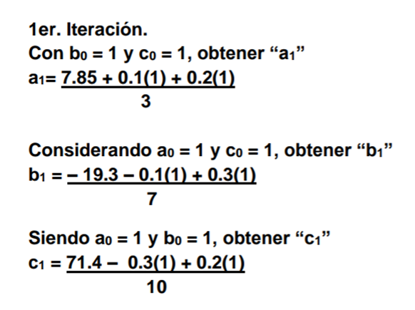
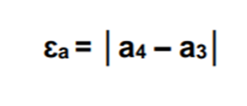

Introducción
El método de Jacobi es un método iterativo utilizado para resolver sistemas de ecuaciones lineales. Consiste basicamente en obtener una ecuacion de recurrencia (matricial en este caso)y proponer un vector solucion inicial; posteriormente, se deberan realizar las iteraciones necesarias hasta que la diferencia entre dos vectores consecutivos cumpla con una tolerancia predefinida.

Ventajas
- El método de Jacobi es sencillo de entender e implementar, especialmente adecuado para problemas educativos y ejemplos básicos.
- Los cálculos de cada componente del vector solución en una iteración son independientes entre sí, lo que permite una implementación paralela eficiente.
- A diferencia de métodos como la eliminación gaussiana o la descomposición LU, el método de Jacobi no requiere la factorización de la matriz, lo cual puede ser ventajoso en algunos casos.
Desventajas
- La convergencia no está garantizada para todas las matrices. La matriz debe ser estrictamente diagonalmente dominante o simétrica y definida positiva para garantizar la convergencia.
- Para alcanzar una precisión alta, pueden ser necesarias muchas iteraciones, lo que aumenta el tiempo de cálculo y los recursos computacionales necesario.
- En algunos casos, la acumulación de errores de redondeo puede afectar la precisión y estabilidad de la solución, especialmente en sistemas grandes.
Explicación del Método
-
Analizar la diagonal dominante
En este primer paso tenemos que despejar a de la ecuacion 1, b de la ecuacion 2 y c de la ecuacion 3.

Estas ecuaciones las llamaremos 4, 5 y 6.
-
Comenzar las iteraciones
En este paso calcularemos a1, b1 y c1. A1 se calculara con la ecuacion 4, B1 con la ecuacion 5 y C1 con la ecuacion 6.
Los valores de a0, b0 y c0 se sustituyen con un valor inicial, el cual sera 1.
-
Calcular el error.
El siguiente paso es calcular el error para las 3 variables (a, b y c). Para hacerlo simplemente le restaremos al valor calculado el valor con el que hicimos los calculos.
En esta primera iteracion seria A1 - A0 para el caso de la variable a. El error tiene que ser .001 almenos, de lo contrario volvemos a iterar usando el proceso del paso 2.
-
Encontrar el resultado final.
Al encontrar en las 3 variables un factor error de .001 terminaremos nuestro proceso, ya que habremos encontrado nuestros resultados deseados.

Video explicativo
Practica